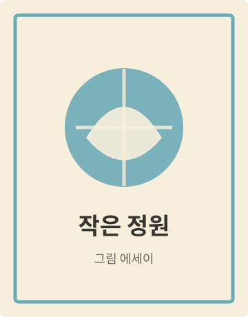
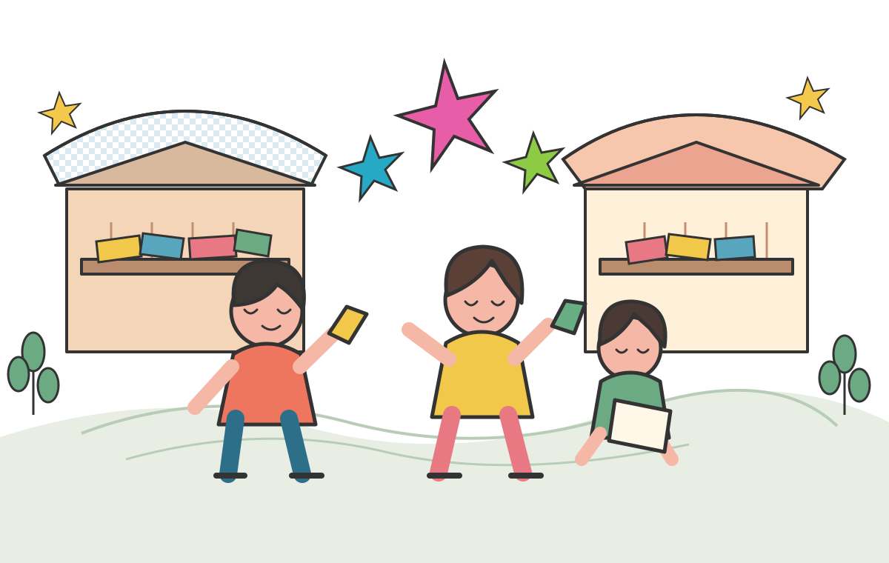

ILLUSTRATION
작은 정원
마음에 심는 작은 그림들

북앤드림은 독립출판 작가와 독자가 직접 만나 취향과 이야기를 나누는 작은 책 축제입니다.
누군가의 일기에서 시작된 책, 오래 간직하고 싶은 그림과 문장, 세상에 단 하나뿐인 이야기를 만나보세요. 천천히 둘러보고, 마음에 드는 책을 발견하고, 좋아하는 작가에게 인사를 건네도 좋아요.
어떤 즐거움이 기다릴까요? ↘READ · TALK · MAKE
책이 만들어진 순간과 그 안의 이야기를 작가에게 직접 들어봐요.
독립출판물과 작은 굿즈, 작가의 취향이 담긴 물건을 구경해요.
종이와 실, 상상력을 모아 세상에 하나뿐인 책을 만들어봐요.
SAVE THE DATE
이틀 동안 이어지는 책과 사람의 이야기.
원하는 시간에 가볍게 들러주세요.
독립출판 마켓 · 오프닝 북토크 · 미니북 워크숍
작가와의 대화 · 취향 교환소 · 클로징 토크
YOUR STORY, YOUR BOOK
독자로, 작가로, 출판사로 함께해 주세요.